Click on corner names above to view photographs.
Pits and Grandstands
|| Contents | Pits & Grandstands | Calvaire | Gueux | Bretelle Sud | Bretelle Nord | Muizon | RN31 | Thillois || Home ||
Click on corner names above to view photographs.
Return to racingcircuits.net's Historic Circuits Photo Archive Main Index
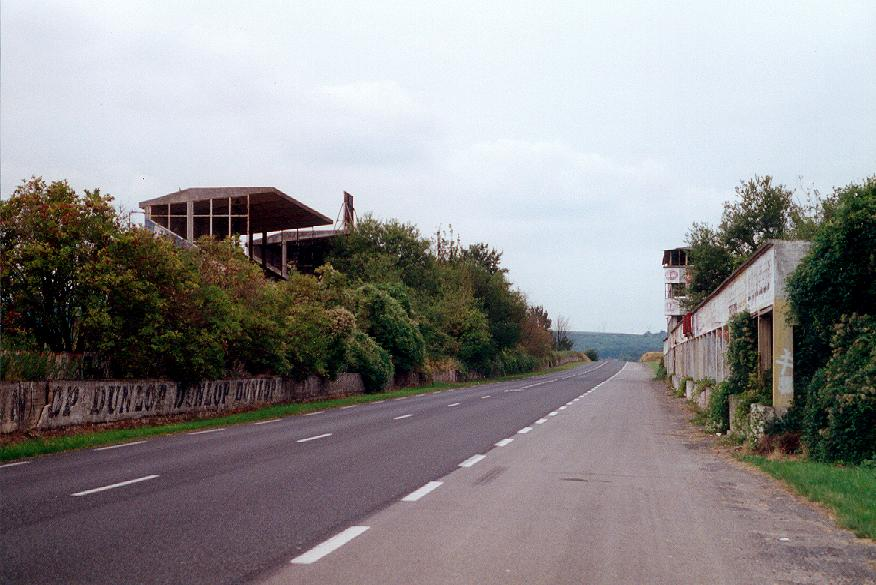
Grandstands and Pits.
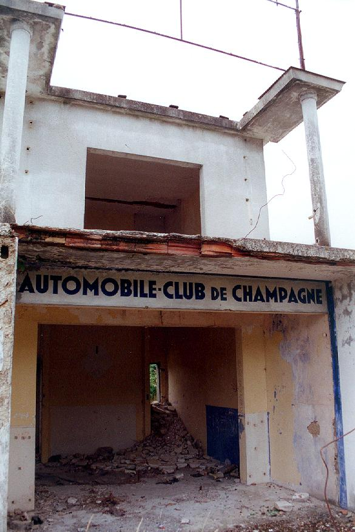
Garage building behind the pits.
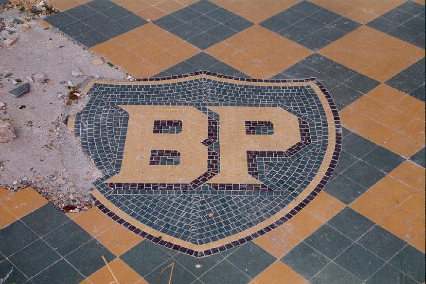
BP logo mosaic.
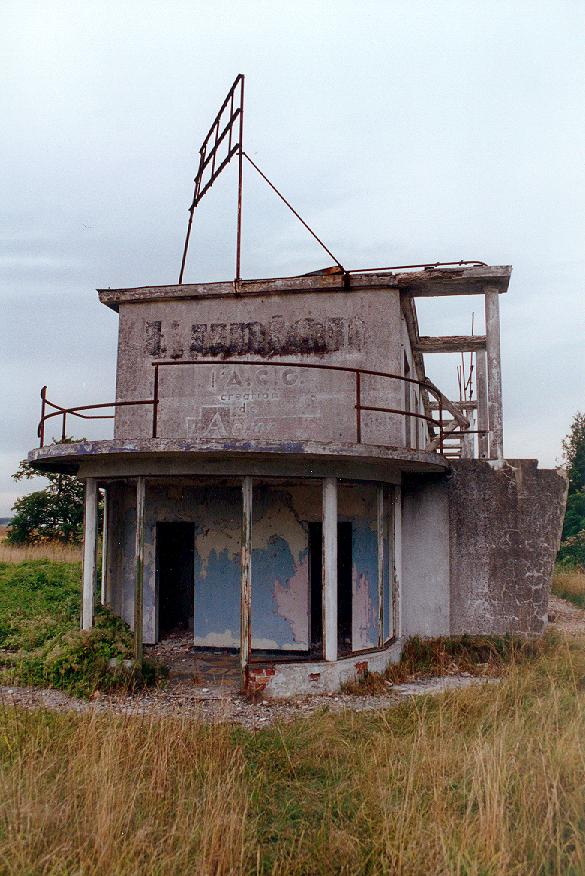
BP stand behind the pits.
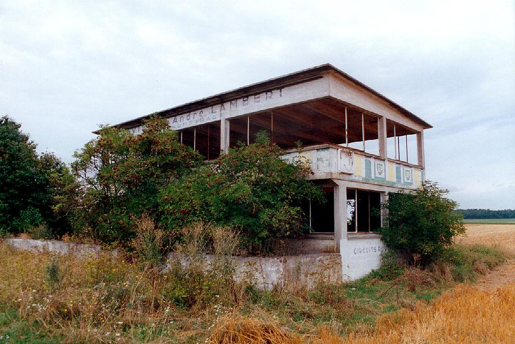
Timekeepers building at the Start/Finish line.

Pitstop.
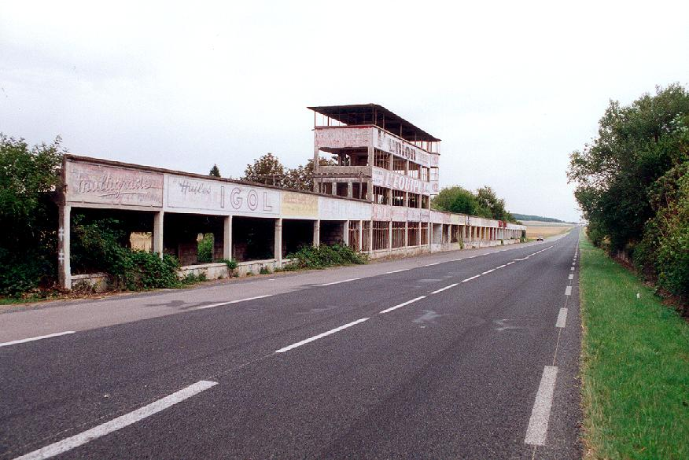
Pits and Main Straight.
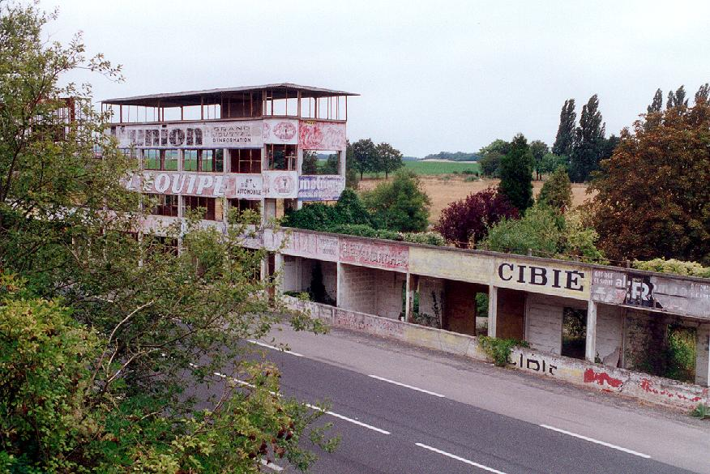
Pits as seen from grandstand.

Main pits building.
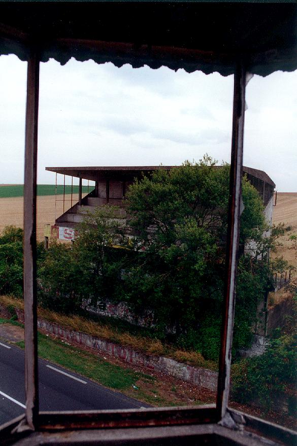
Small grandstand seen from main pit building.
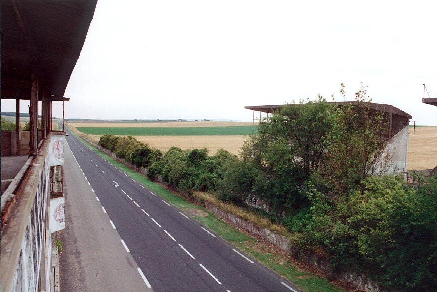
View on Main Straight and small grandstand from main pits building.
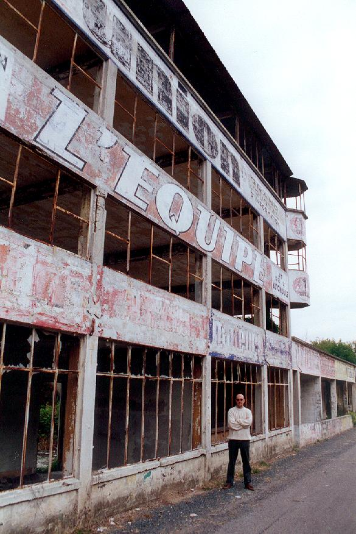
Main pits building.
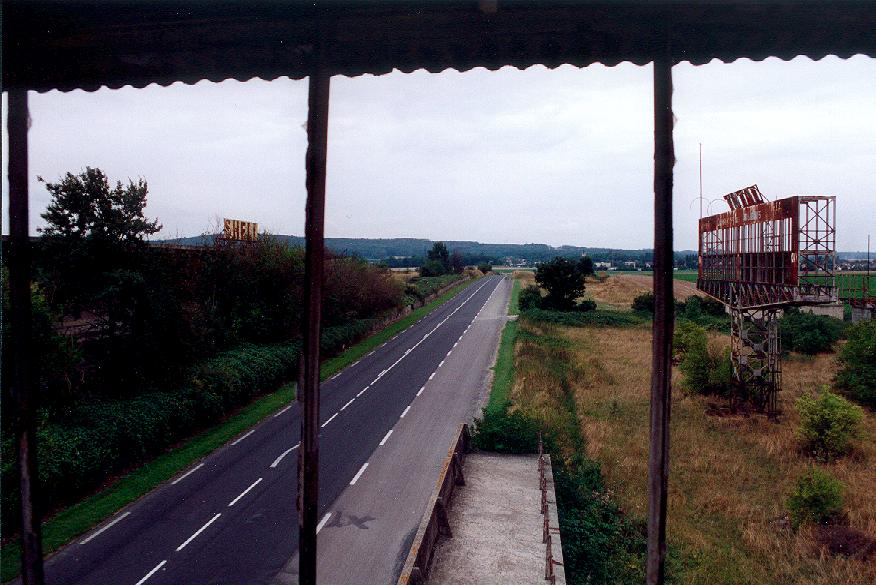
Main Straight towards Gueux from main pits building.
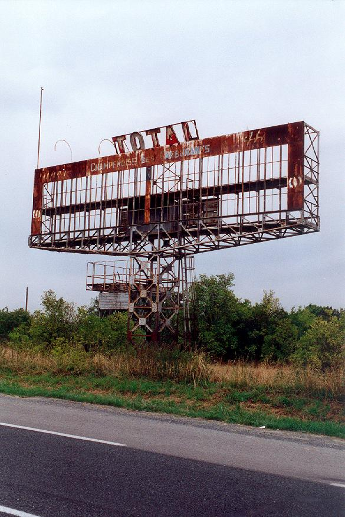
Race information panel.
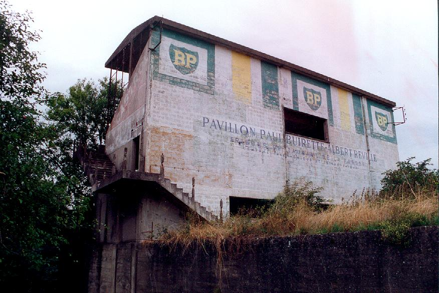
Rear of the small grandstand.
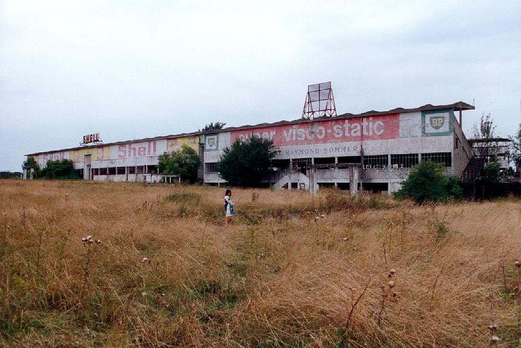
Rear of the main grandstand.
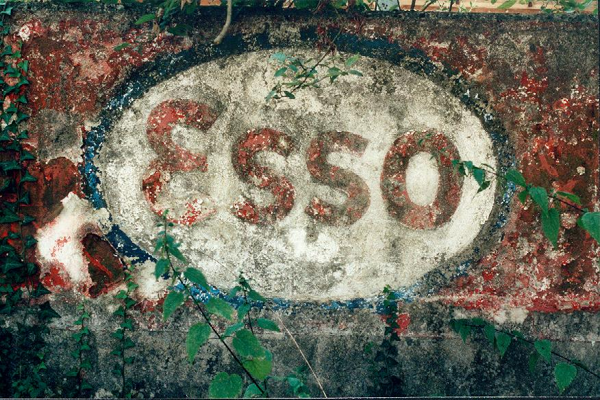
Esso logo at bottom of podium in front of major grandstand.
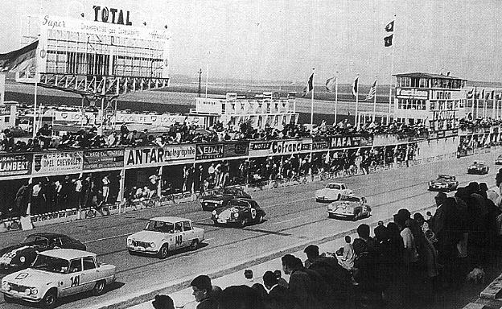
View from the main grandstand in the early sixties.
Photographs supplied by Luc Ghys. Reproduced here with kind permission.